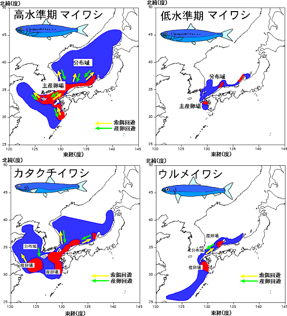

マイワシは資源の大きさによって分布域を大きく変えます。資源が多い時には東シナ海から日本海の広範囲に分布しますが、少ないときには日本の沿岸域に分布しています。カタクチイワシは、東シナ海・黄海に多いとされ、日本海の沖合域のやや暖かい海域に分布します。東シナ海・黄海と日本海のカタクチイワシの交流については知見がすくなく、不明な点が多くあります。ウルメイワシはマイワシやカタクチイワシと異なり、分布域はさほど大きくなく、東シナ海の大陸棚縁辺域に沿って日本海沿岸にまで分布しています。なお、全ての魚種は太平洋側にも分布し、マイワシとカタクチイワシは資源の増減とともに分布が拡大・縮小します。
いわし類の分布〜東シナ海・日本海〜
